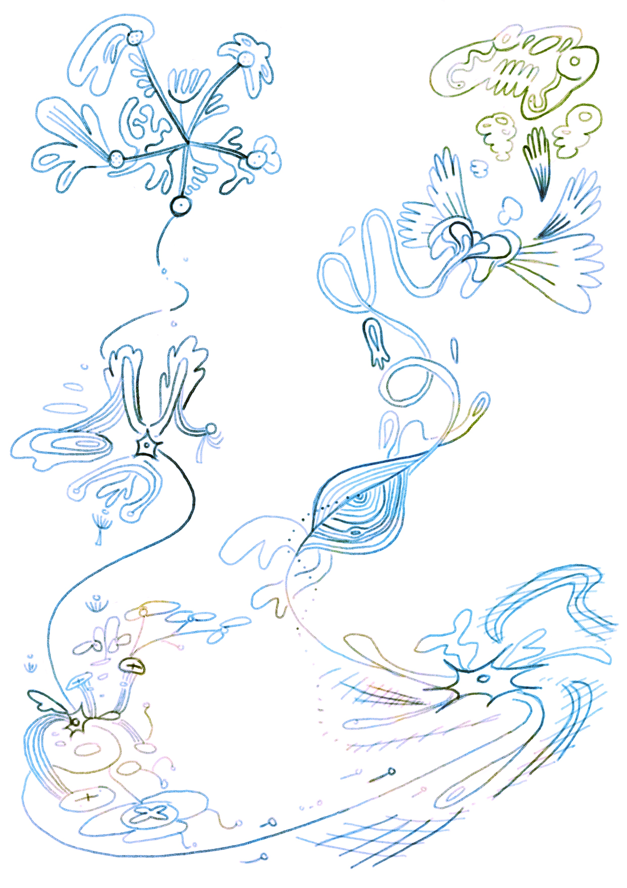
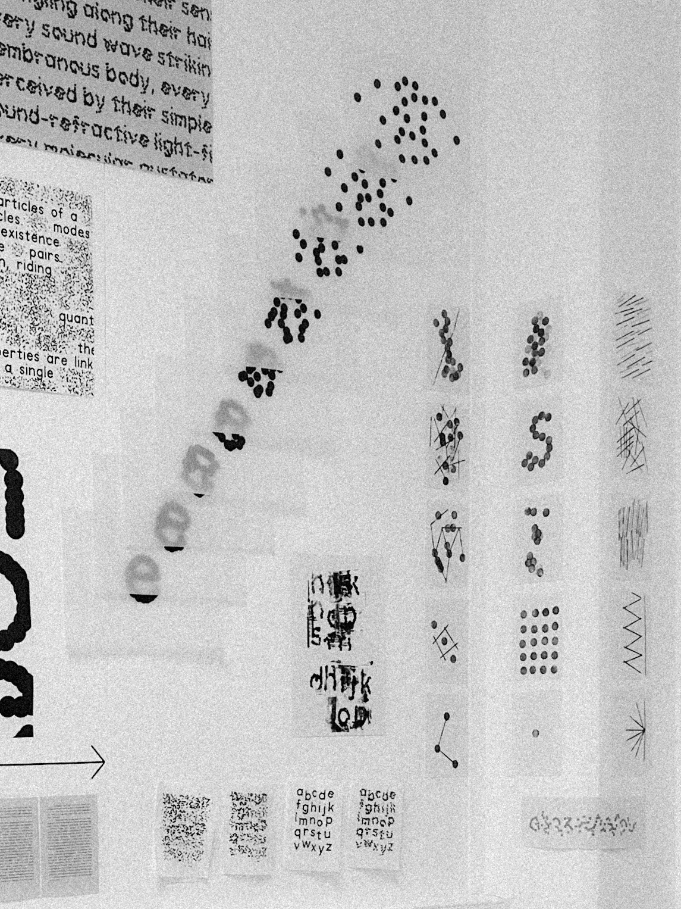
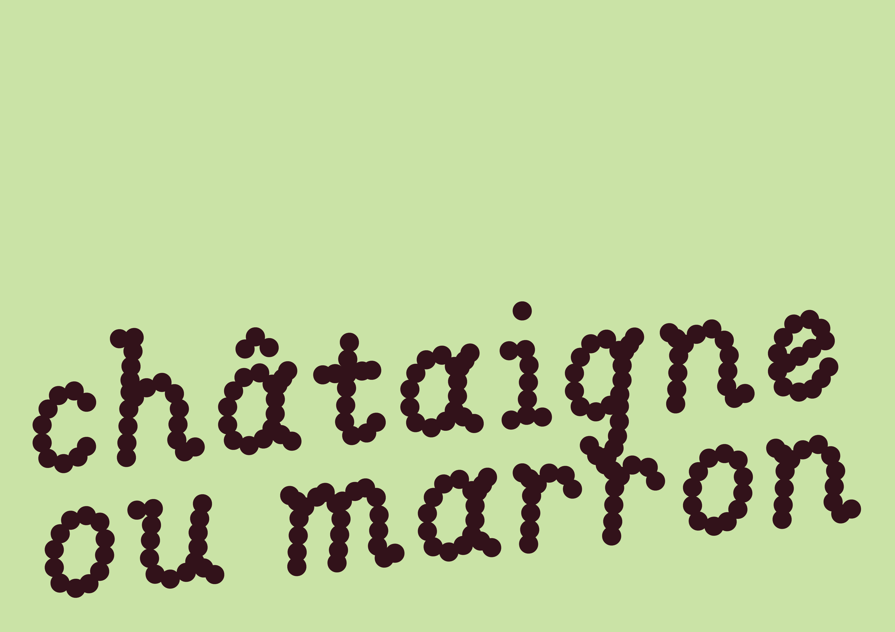
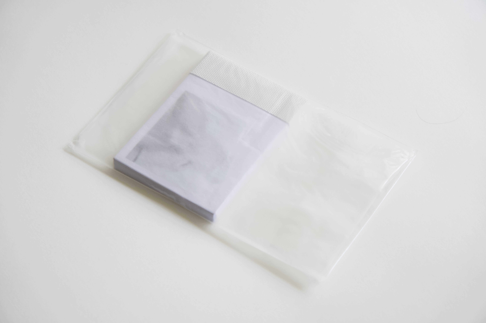
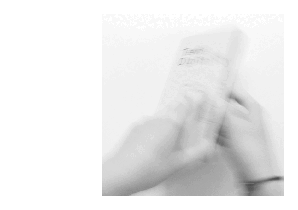
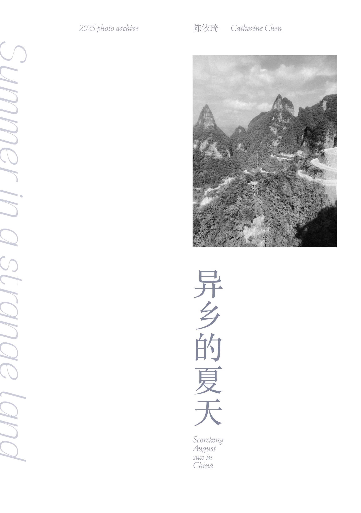
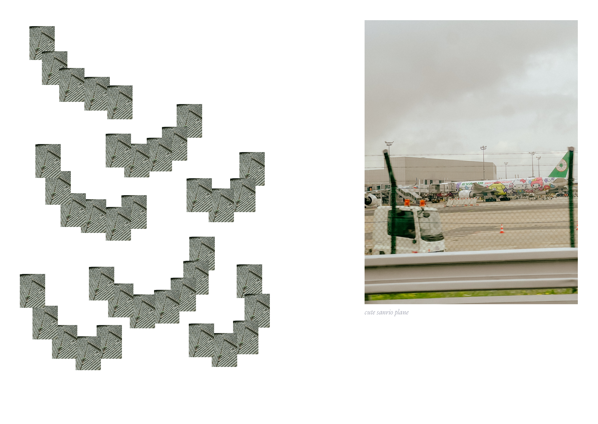
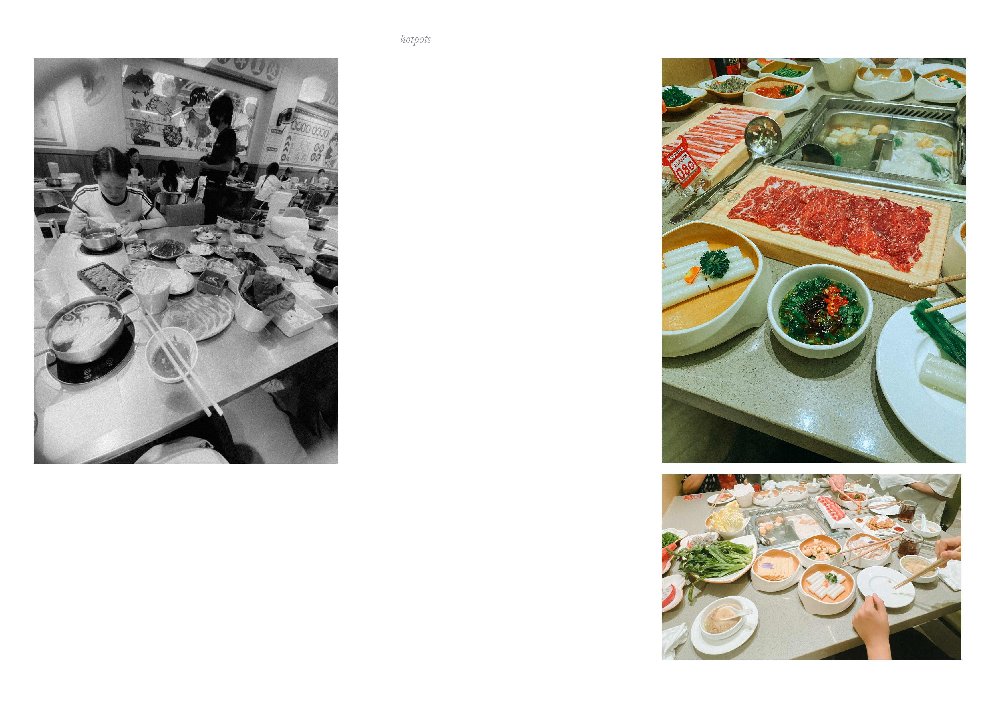

Catherine Chen
Chén Yīqí, 陈依琦
(𖫝⍸𖫝)
Bonjour et bienvenue sur cette page! Voici une sélection de projets que j'ai réalisé pendant mes études et plus récemment. Pour une meilleure expérience, veuillez utiliser un ordinateur. Bonne visite!
Hello and welcome to this page! Here's various projects made throughout my school years and more recent ones. For a better experience, please use a computer. Happy scrolling!

🀫🀦 DNMADe Graphisme (BA in Graphic Design),
Cotton 2025
ig: earlyflanerie
Instrument Serif (design: Rodrigo Fuenzalida & Jordan Egstad)
© 2026 Catherine Chen. Tous droits réservés.
© 2026 Catherine Chen. All rights reserved.
Proje(c)ts
Entropie
Projet de typographie variable expérimentale questionnant notre rapport à la lecture
Experimental type design project exploring reading and its affect


entretien en anglais avec Xiaoyuan Gao (notyourtype) ici
interview with Xiaoyuan Gao (notyourtype) here
pour essayer l'outil à motif, c'est ici (seulement sur ordinateur)
you can also try my pattern tool here (laptop only)

version oblique
slanted version
Flip, turn, mark
Série photographique sous forme de flipbook (papier 120 g/m², toile, film acétate, glassine)
Photographic series in flipbook format (120 g/m² paper, canvas, acetate film, glassine)


ouvrages présentés
featured books
Tender Digitally, The Incidents: Inhabiting the Negative Space, Dreaming in Color, Panique, L'art du design
Summer in a strange land
collection de photos prises en Chine
collection of photographs taken in China



